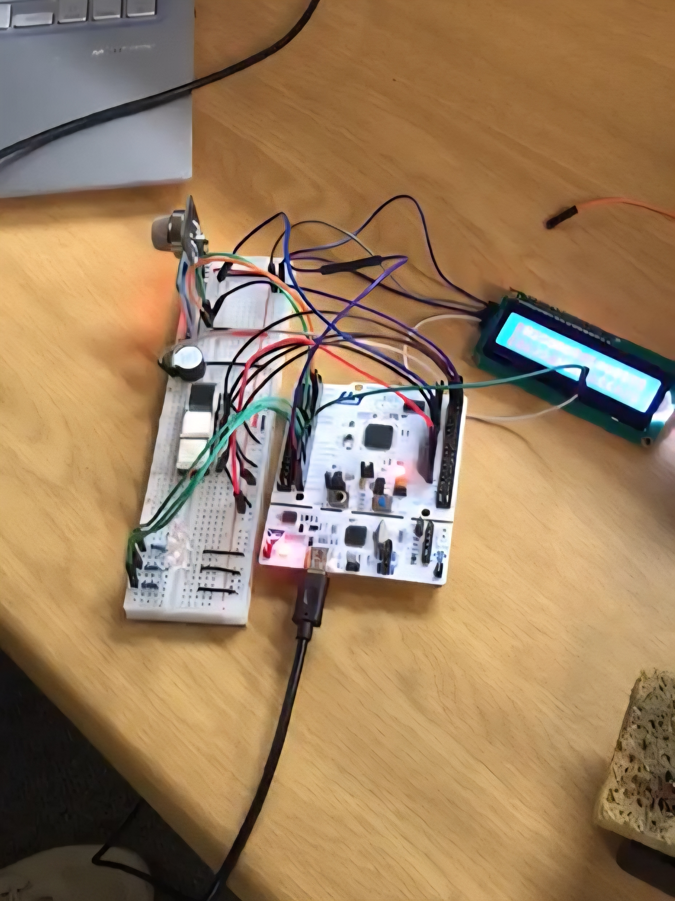
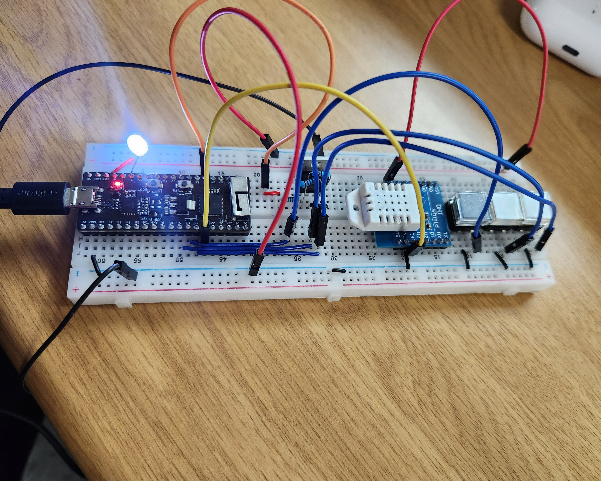
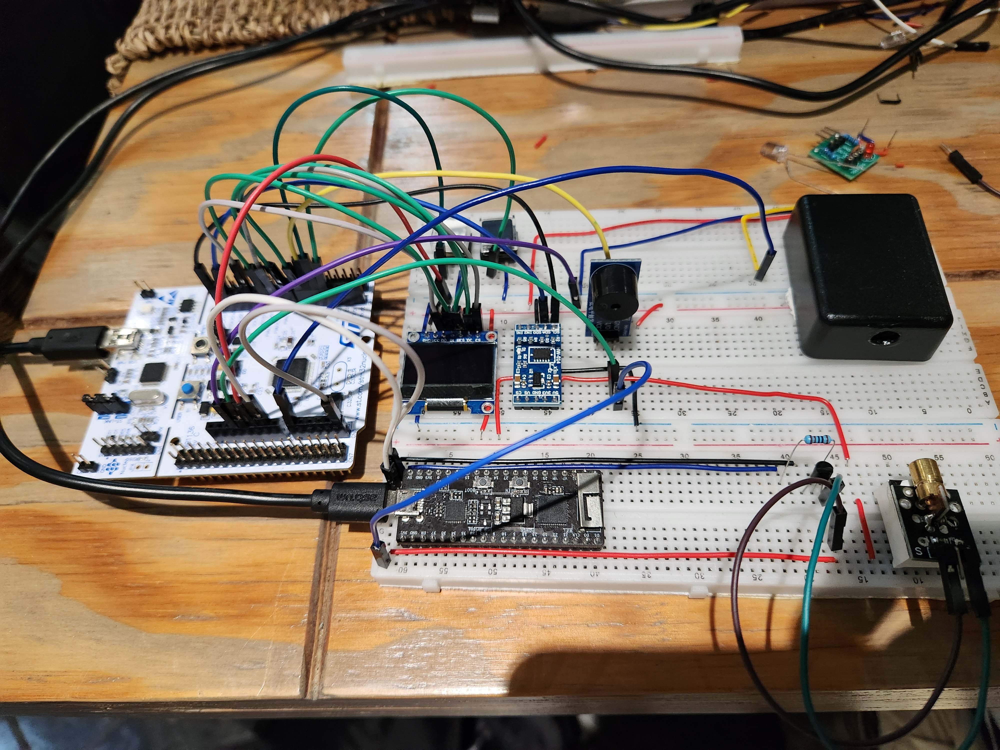

Embedded Systems • Sensing • Control
Microcontroller
Project Portfolio
This is a collection of some of the practical embedded system projects I've worked on using microcontrollers like the STM32 and the ESP32. It includes used sensors, displays and modules I've used and the various techniques like PMW, USART and real-time decision logics I've used to make them work.
ESP32 Embedded Platform
Floating 3D Hardware Model3
Featured Projects
2
Main Platforms
6+
Sensors & Modules
100%
Embedded Focus
Featured Work
Project Modules

Project 01
Smart Gas Monitoring
Real-time gas concentration monitoring using an STM32, gas sensor, LCD, HC-05 Bluetooth module, buzzer, and LEDs.

Project 02
Temperature Fan Control
ESP32-based thermal regulation system using DHT22 sensing, PWM fan control, MOSFET switching, and selectable cooling modes.

Project 03
Perimeter Detection
Laser-based security system using an LDR receiver, ADXL accelerometer, OLED display, and buzzer alert categories.